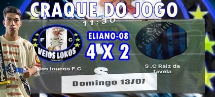
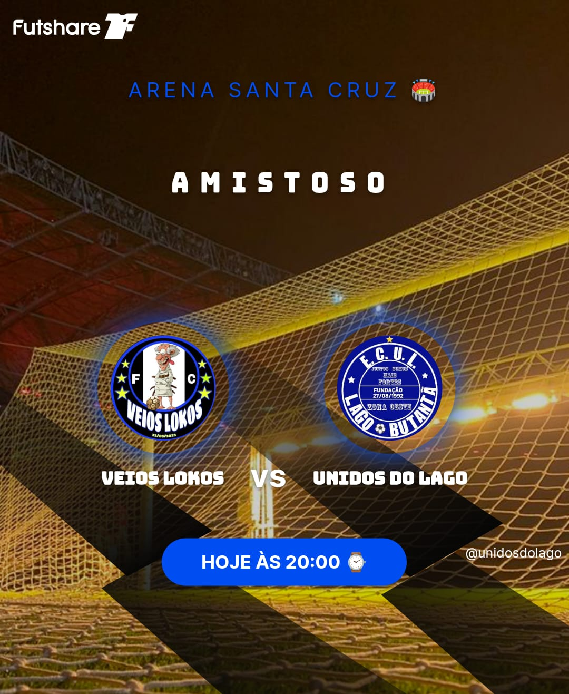

NOTICIAS SEXTA
NOTICIAS SABADO
NOTICIAS DOMINGO
NOTICIAS TERÇA
NOTICIAS QUARTA

8 JOGOS INVICTO EM CASA
VEIOS LOKOS FC Enfrenta o JD do Lago em uma Batalha Épica! O jogo contra o time JD do Lago foi uma batalha épica, com os dois times jogando com intensidade e paixão! O VEIOS LOKOS FC começou o jogo com uma proposta defensiva, jogando no 442 com Reninha e Marcos no ataque. Mas logo de início, o time mostrou sua força ofensiva e conseguiu abrir o placar com Reninha! O Jogo Está Acirrado!NOTICIAS QUINTA
A Equipe em Alta!
A equipe VEIOS LOKOS FC está em alta, com jogadores talentosos e determinados! Com a liderança de Romario e a habilidade de Eleno e Mario, o time está pronto para conquistar mais vitórias e alcançar seus objetivos!
NOTICIAS SEGUNDA
Corrida Na Defesa

Corrida Na Assistencia

Corrida Dos Artilharia

AO SER VISTO FAVOR SE AFASTAR, JOGADOR MUITO PERIGOSO NO LADO DEFENSIVO DO CAMPO
,EXTREMAMENTE POCESSIVO, NÃO PERDE UMA BOLA, E MATADOR NATO ADORA MATAR, A JOGADA.
SE AFASTE DEVAGAR BEM DEVAGAR!

AO SER VISTO FAVOR SE AFASTAR, JOGADOR MUITO PERIGOSO EM TODAS AS AREAS DO CAMPO ZAGA, MEIO E ATAQUE, NÃO PEDE UMA OPORTUNIDADE. CORRA!
NOTICIAS OU FOFOCAS

NÃO TENHO SAUDADES
Dês de que foi contratado de graça pelo time Veios Lokos Fc
o goleiro, zagueiro Douglas, o temido (Douguinhas), vem se destacando tanto na zaga, tanto no gol.
ele afirma esta feliz no time e não tem saudades dos tempos de real madrid, e crava.
"Estou no melhor clube do mundo"

É MENTIRA, A FOTO É FAKE
Para alivio da nação lokense, o professor paulinho nome muito falado para assumir a seleção da italia teve uma foto divulgada nas redes sociais, e nos canais de tv aberto e fexado hbo, foxsportes confirmaram, que a foto em questão, não é verdadeira, após seu nome ser cogitado para seleção da italia, brasileiros revoltados fizeram a montagem, para os italianos regeitalo.

NÃO ME COMPARE
O português NANZINHO, capitão da seleção portuguesa, diz não gostar de ser comparado ao cristiano ronaldo
ele se diz melhor jogador.
"Eu sou o melhor do mundo"

SÓ AMIZADES, NADA MAIS
Hoje o jogador NEYMAR postou uma foto com seu idolo, o craque da camisa 6 PINGUIM, o lendario captão dos 11x0.
a Foto, foi a mais compartilhada do dia e esta em primeiro lugar no X
.
Perguntado ao craque se ele vai para o santos, ele responde.
"Apenas seleção, só troco o Veios Lokos pela seleção Brasileira"